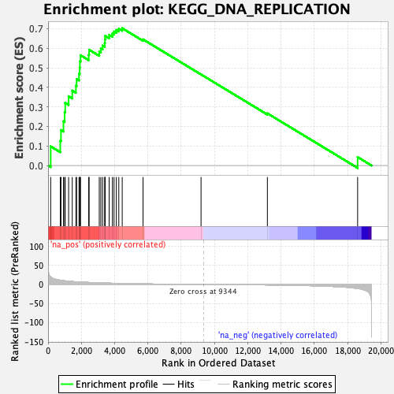
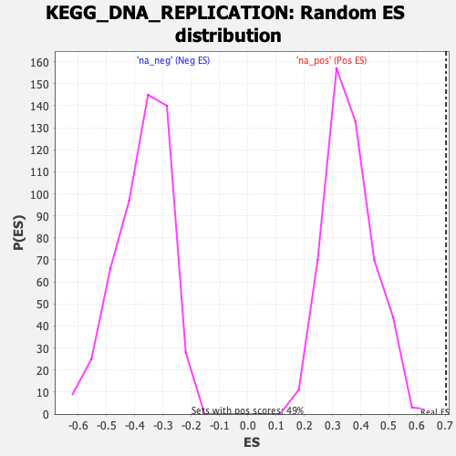

| | | Dataset | DE_genes |
| Phenotype | NoPhenotypeAvailable |
| Upregulated in class | na_pos |
| GeneSet | KEGG_DNA_REPLICATION |
| Enrichment Score (ES) | 0.7023639 |
| Normalized Enrichment Score (NES) | 1.9428966 |
| Nominal p-value | 0.0 |
| FDR q-value | 0.0022657404 |
| FWER p-Value | 0.007 |
Table: GSEA Results Summary

Fig 1: Enrichment plot: KEGG_DNA_REPLICATION
Profile of the Running ES Score & Positions of GeneSet Members on the Rank Ordered List
| SYMBOL | RANK IN GENE LIST | RANK METRIC SCORE | RUNNING ES | CORE ENRICHMENT | | 1 | POLE3 | 157 | 20.003 | 0.0979 | Yes |
| 2 | POLD1 | 733 | 11.005 | 0.1265 | Yes |
| 3 | POLD3 | 777 | 10.766 | 0.1813 | Yes |
| 4 | PRIM2 | 925 | 9.841 | 0.2259 | Yes |
| 5 | RPA2 | 996 | 9.524 | 0.2727 | Yes |
| 6 | MCM3 | 1030 | 9.354 | 0.3206 | Yes |
| 7 | RFC5 | 1235 | 8.346 | 0.3543 | Yes |
| 8 | RPA1 | 1454 | 7.608 | 0.3834 | Yes |
| 9 | SSBP1 | 1674 | 6.906 | 0.4087 | Yes |
| 10 | RFC3 | 1714 | 6.817 | 0.4428 | Yes |
| 11 | RFC2 | 1859 | 6.418 | 0.4693 | Yes |
| 12 | POLD2 | 1901 | 6.306 | 0.5006 | Yes |
| 13 | MCM6 | 1913 | 6.285 | 0.5333 | Yes |
| 14 | POLE | 1951 | 6.201 | 0.5643 | Yes |
| 15 | POLA1 | 2442 | 5.181 | 0.5665 | Yes |
| 16 | MCM7 | 2467 | 5.128 | 0.5924 | Yes |
| 17 | RNASEH2A | 3077 | 4.114 | 0.5828 | Yes |
| 18 | RFC4 | 3172 | 3.955 | 0.5989 | Yes |
| 19 | MCM5 | 3278 | 3.797 | 0.6136 | Yes |
| 20 | MCM4 | 3405 | 3.640 | 0.6264 | Yes |
| 21 | MCM2 | 3420 | 3.614 | 0.6448 | Yes |
| 22 | POLE2 | 3431 | 3.598 | 0.6634 | Yes |
| 23 | LIG1 | 3672 | 3.320 | 0.6686 | Yes |
| 24 | RPA3 | 3866 | 3.088 | 0.6750 | Yes |
| 25 | PRIM1 | 3965 | 2.972 | 0.6857 | Yes |
| 26 | POLE4 | 4103 | 2.812 | 0.6935 | Yes |
| 27 | RPA4 | 4251 | 2.652 | 0.7000 | Yes |
| 28 | RNASEH2B | 4456 | 2.429 | 0.7024 | Yes |
| 29 | RFC1 | 5707 | 1.405 | 0.6454 | No |
| 30 | RNASEH2C | 9193 | 0.029 | 0.4660 | No |
| 31 | RNASEH1 | 13180 | -1.178 | 0.2668 | No |
| 32 | POLD4 | 18603 | -10.494 | 0.0430 | No |
Table: GSEA details [plain text format]

Fig 2: KEGG_DNA_REPLICATION: Random ES distribution
Gene set null distribution of ES for KEGG_DNA_REPLICATION